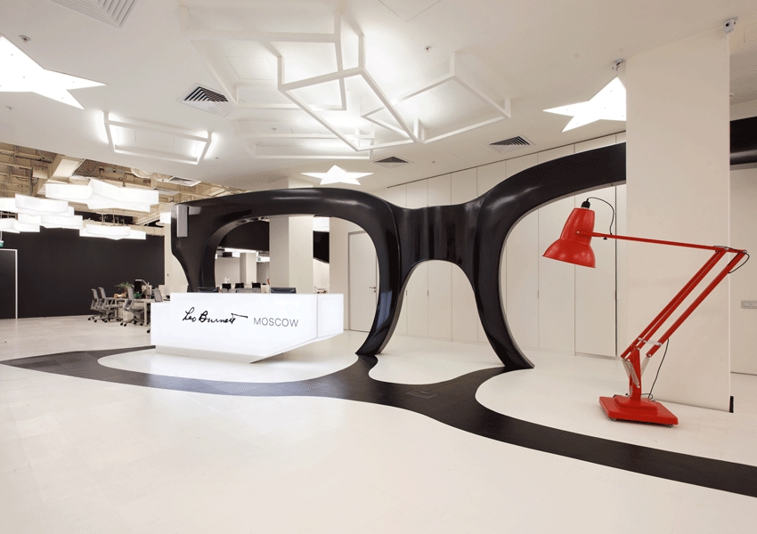
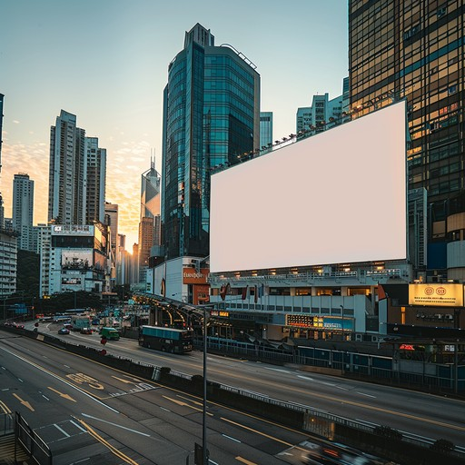

Каталог, карта, справочная информация
Рекламный рынок России — один из крупнейших в Европе. По данным АКАР (Ассоциации коммуникационных агентств России), объём рынка рекламы стабильно превышает 500 млрд рублей в год и продолжает расти. На нём работают сотни агентств: от международных сетевых холдингов до небольших независимых студий, специализирующихся на отдельных направлениях.

Крупнейшие игроки сосредоточены в Москве и Санкт-Петербурге. Они предоставляют полный цикл услуг: стратегию, креатив, медиапланирование, digital-продвижение, PR и брендинг. Многие агентства входят в международные сети (Omnicom, WPP, Publicis, IPG) и обслуживают как глобальные, так и локальные бренды.
Российский рекламный рынок делится на несколько крупных сегментов: ТВ-реклама, digital, наружная реклама, радио, пресса. Наибольший рост в последние годы показывает digital — интернет-реклама постепенно становится основным каналом коммуникации с потребителем. Вслед за ней активно развиваются SMM, инфлюенс- маркетинг и programmatic-закупки.

Современный рекламный рынок России начал формироваться в конце 1980-х — начале 1990-х годов. Первые рекламные агентства появились как небольшие частные студии, которые занимались размещением объявлений в газетах и на телевидении. В 1990-е на рынок пришли международные сети: BBDO, McCann, Leo Burnett, Saatchi & Saatchi. Они принесли западные стандарты работы, методологию брифов и стратегического планирования.
К 2000-м годам рынок окончательно сформировался: появились крупные независимые агентства, профессиональные ассоциации (АКАР, РАМУ), отраслевые премии («Каннские львы», «Red Apple», «Серебряный Меркурий»). В 2010-е годы ключевым драйвером роста стал digital, а вместе с ним — новые форматы: контент-маркетинг, performance-реклама, работа с блогерами.
Рекламный рынок России структурно делится на несколько направлений. Каждое из них обслуживается отдельными специализированными агентствами или подразделениями внутри крупных холдингов.
Большинство крупных рекламных агентств России имеют головные офисы в Москве. Ниже представлена схема расположения ключевых офисов. Нажмите на любую точку на карте, чтобы перейти к описанию соответствующего агентства в каталоге.
Значительная часть крупных рекламных агентств России входит в международные коммуникационные холдинги. Это даёт им доступ к глобальной экспертизе, методологиям и клиентам, а также позволяет обмениваться опытом с зарубежными коллегами.
Крупнейшие холдинги, представленные в России: Omnicom Group (BBDO, DDB), WPP (Ogilvy, GroupM), Publicis Groupe (Leo Burnett, Saatchi & Saatchi), Interpublic Group (McCann, FCB). Помимо сетевых, на рынке успешно работают независимые российские агентства: «Родная Речь», «Восход», Redline, TWIGA и другие.
| Агентство | Год основания | Специализация | Сайт |
|---|---|---|---|
| BBDO Russia | 1989 | Полный цикл | bbdo.ru |
| Leo Burnett | 1992 | Креатив, брендинг | leoburnett.ru |
| McCann | 1994 | Реклама, PR | mccann.ru |
| ACG | 1996 | Медиа, digital | acg.ru |
| TWIGA | 1997 | Медиапланирование | twiga.ru |
| Родная Речь | 2002 | Креатив | rodnayarech.ru |
| Восход | 2007 | Брендинг | voskhod.ru |
| Redline | 2008 | Digital, PR | redline.ru |
Рекламная индустрия меняется быстрее многих других отраслей. То, что работало пять лет назад, сегодня может быть уже неэффективным. Агентства вынуждены постоянно осваивать новые инструменты и форматы коммуникации.
Отдельно стоит отметить рост значимости локальных брендов и импортозамещения в рекламной индустрии. Российские компании всё чаще обращаются к отечественным агентствам, которые лучше понимают специфику местного рынка и умеют работать с местной аудиторией.
Выбор агентства — важный шаг для бизнеса. От того, насколько профессионально команда подойдёт к задаче, зависит узнаваемость бренда, охват аудитории и итоговые продажи. Поэтому стоит внимательно изучать рынок и сравнивать несколько предложений, прежде чем принимать решение.
Не стоит ориентироваться только на размер агентства или громкое имя. Иногда небольшая команда, специализирующаяся именно на вашей отрасли, может предложить более точное и эффективное решение, чем крупный холдинг. Главное — чтобы агентство понимало ваш бизнес и говорило с вами на одном языке.